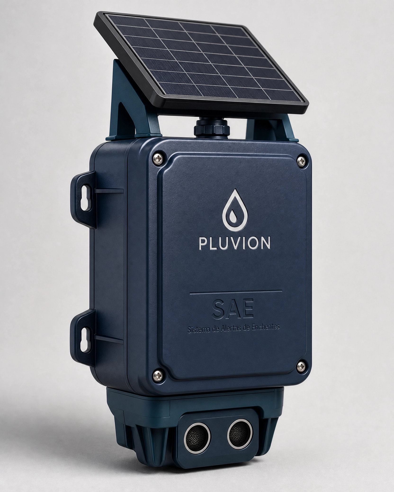

Chuvas cada vez mais intensas
Eventos climáticos extremos são mais frequentes e imprevisíveis, exigindo respostas mais rápidas do que os modelos tradicionais de monitoramento conseguem oferecer.
Monitoramento de enchentes em tempo real
Pluvion conecta os sensores SAE (Sistema de Alerta de Enchentes) em locais próximos aos bueiros e áreas de risco, com alertas personalizados destinados à população, podendo ser filtrados por rua, bairro e cidade — assim, empresas detém o monitoramento contínuo e os usuários do aplicativo têm acesso a alertas em tempo real.
Participação
Responda a cinco perguntas rápidas para saber se a sua realidade está sendo afetada pelas enchentes, como milhões de brasileiros — não se preocupe com cadastro ou com envio de dados, não compartilhamos nem recebemos nada.
Em que parcela da sociedade brasileira você se encontra? Na que sofre constantemente com enchentes, ou na que apenas vê essa problemática atráves da mídia? Leva menos de 2 minutos para responder às cinco perguntas. Suas respostas ficam só nesta página, nada é salvo ou enviado para nenhum servidor.
O problema
Eventos climáticos extremos são mais frequentes e imprevisíveis, exigindo respostas mais rápidas do que os modelos tradicionais de monitoramento conseguem oferecer.
Grande parte das áreas de risco ainda não possuem monitoramento contínuo do nível da água, o que atrasa a percepção do problema.
Avisos amplos, sem recorte por rua ou bairro, dificultam a decisão individual no momento em que ela mais importa.
:strip_icc()/i.s3.glbimg.com/v1/AUTH_59edd422c0c84a879bd37670ae4f538a/internal_photos/bs/2020/0/1/K0DEBnSzOUXc9llH49CQ/chuva-sp17.jpg)
Duas novas vítimas foram registradas nesse fim de semana, em razão dos temporais. A primeira delas foi Pedro Alves de França, que morreu no último sábado (7) em São Bernardo do Campo, na Grande SP, e outra em Sorocaba, no interior do estado.
Ler matéria completaPesquisa de campo
Entre nossas fontes de pesquisa de campo, aplicamos um levantamento com moradores de áreas historicamente afetadas por enchentes e alagamentos. Os dados abaixo resumem os principais achados.
Pessoas entrevistadas
2026
Regiões participantes
2026
Relatam alagamento recorrente
2026
A maior parte dos respondentes relata sofrer com alagamentos na própria região, reforçando a necessidade de monitoramento contínuo.
Metade dos moradores só recebe o aviso quando a água já está na rua ou dentro do imóvel — exatamente o intervalo que um alerta antecipado busca reduzir.
O mal funcionamento do sistema de drenagem é uma preocupação significativa para a maioria dos moradores, além de ser um agravante para enchentes.
Por causa de situações como essa, nasce a proposta do Pluvion, de trazer acessibilidade e velocidade, priozando sempre a segurança.
Esses dados representam uma pequena parcela de um estado inteiro, e até mesmo uma nação toda que sofre com tal problemática.
É nitida a necessidade que a população tem de encotrar uma solução eficaz para mitigar os riscos associados às enchentes, e o SAE pode ser uma solução promissora.
Propósito
O Pluvion nasceu da constatação de que a informação chega tarde demais para quem mais precisa dela. Isso orienta cada decisão do projeto — da forma como medimos o risco até como entregamos o alerta.
A sociedade brasileira busca por cuidado e proteção para a prevenção contra enchentes e alagamentos. É para atender às espectativas de um alerta na hora certa de forma precisa que o Pluvion existe.
A diferença entre um alerta recebido a tempo e um recebido tarde demais pode ser determinante para decidir entre um susto e uma tragédia. Cada sensor instalado não é apenas um monitoramento por parte do comprador, mas uma ferramenta de proteção.
Buscamos trazer a proteção conectando tecnologia e inovação para a população e para os compradores do SAE. Num país conectado, a informação sempre chega a tempo.
Imaginamos cidades onde o monitoramento de risco é tão comum quanto a previsão do tempo, de forma acessível, filtrando de forma específica por local e de maneira confiável o bastante para orientar decisões reais, de moradores a órgãos públicos.
Um trabalho bem feito com ideias concretas e bem definidas, focando sempre em proporcionar a melhor informação através de dados reais, alertas específicos e tecnologia a serviço de quem mais precisa da notificação na hora certa.
Precisão antes da catástrofe, clareza antes de casas inundadas, e acesso antes de pessoas desabrigadas, deslocadas e perdidas — são esses princípios que moldam cada escolha técnica do Pluvion, do sensor ao aplicativo.
Como funciona
O SAE realiza as medições no ponto monitorado, próximo aos bueiros e áreas críticas.
O dispositivo transmite as leituras continuamente ao servidor Pluvion.
O backend processa os dados recebidos e calcula os indicadores de risco por região.
As informações processadas chegam ao aplicativo do cidadão e aos ambientes institucionais.

Um dispositivo baseado em ESP32, instalado próximo aos bueiros e pontos críticos, que mede o nível da água e transmite os dados continuamente para o servidor Pluvion — onde a inteligência de risco é processada.
Escala de risco
Situação normal, monitoramento contínuo.
Nível em alteração — acompanhe as atualizações.
Situação relevante — siga as orientações da região.
Risco elevado e imediato — acione ajuda.
Para instituições
Empresas, condomínios, seguradoras e órgãos públicos podem utilizar as informações do Pluvion para monitoramento, análise histórica, relatórios e tomada de decisão.
Criadores
Sou criativa e gosto de desenvolver soluções inovadoras.
Sou criativo e gosto de criar experiências que conectem pessoas e tecnologia.
Trabalhar com foco e determinação é o que garante um excelente projeto.
Foco no desenvolvimento de sistemas embarcados para aplicações de monitoramento e controle.
A escrita e a Segurança da Informação são áreas que me interessam profundamente.
Produções
A monografia completa reúne a pesquisa, a fundamentação teórica e o desenvolvimento técnico por trás do Pluvion.
Baixar monografia